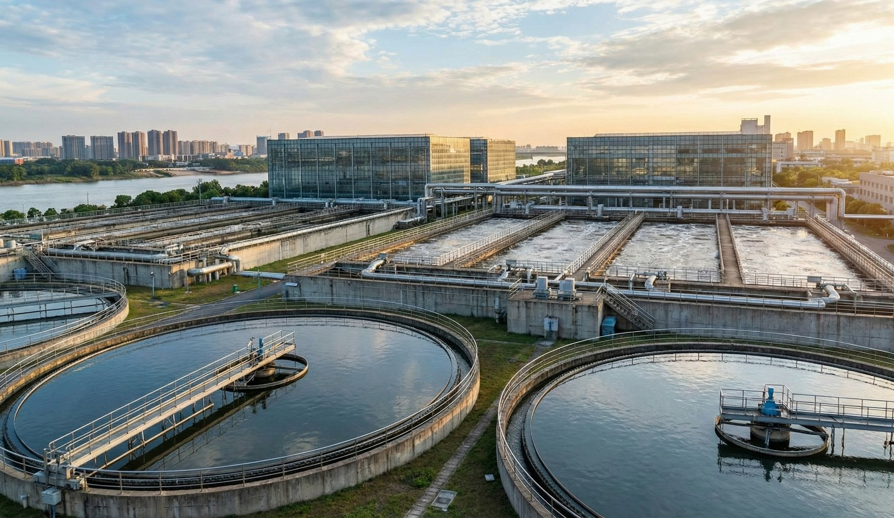

Inicio / Servicios
Plantas de tratamiento MBBR
Tratamiento biológico mediante biomasa adherida a soportes móviles.
Solicitar cotización por WhatsApp
Solución técnica
El MBBR utiliza soportes móviles para el crecimiento de biopelícula. La superficie disponible, el llenado y la aireación se seleccionan según la carga orgánica y los objetivos de nitrificación. Se requiere una etapa adecuada de separación de sólidos.
Esquema conceptual; la configuración final depende del proyecto.
Alcance técnico
- Selección de medios biológicos
- Aireación y retención de soportes
- Separación posterior de sólidos
Aplicaciones
Ampliaciones de PTAR, descargas sanitarias e industriales biodegradables.
Preguntas frecuentes
¿MBBR y MBR son lo mismo?
No. MBBR utiliza biopelícula sobre soportes; MBR separa biomasa mediante membranas. Pueden combinarse según el diseño.
Información para cotizar
Carga orgánica, caudal, temperatura y espacio disponible.
La ingeniería, precio, plazo y condiciones comerciales se definen para cada proyecto. El desempeño y cumplimiento aplicable se establecen según la calidad del agua y el diseño acordado.
Enviar información mediante formularioExplora nuestras soluciones
- Plantas de tratamiento de aguas residuales
- Plantas de tratamiento MBR
- Plantas de tratamiento MBBR
- Membranas MBR
- Ósmosis inversa industrial
- Ultrafiltración industrial
- Operación y mantenimiento de PTAR
- Tratamiento de agua para torres de enfriamiento
- Tratamiento de agua para calderas
- Servicios de arquitectura
- Construcción y obra civil